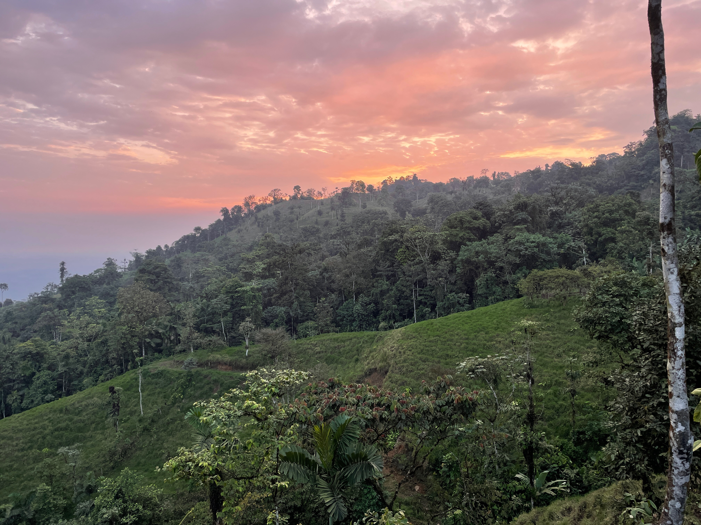

We welcome students and researchers interested in pursuing or advancing a career in botany.

The Integrative Plant Systematics Lab at Texas A&M University is recruiting a postdoctoral research associate to work on genomic and phenomic dimensions of plant diversity. The postdoc should be a botanist (broadly defined) and will be based in College Station to assist with the development and output of an integrative phylogeographic study of a focal grass clade.
The position will involve laboratory and herbarium work, with opportunities for fieldwork. The postdoc will use and develop skills in spectral reflectance, trait prediction, phylogenomics, spatial data analysis, and scholarly output -- working closely with Dawson in all stages.
The postdoc will also have opportunities to develop his/her/their own projects and contribute to other lab projects. Ideas are welcome and may include Erythroxylaceae, North American grasses, western Ecuador floristics and conservation, the Texas flora, and herbarium spectral biology. For more on the western Ecuador conservation work, see ¡Viva Centinela!.
The position also provides opportunities to engage with a global network of botanists and herbarium curators through IHerbSpec.
This is expected to be a two-year postdoc, reviewed after one year, with potential for extension.
Desired start date: August 1 or September 1, 2026.
Desired qualifications:
Interested candidates should send a letter of interest, less than one page, and CV to dawson.white@gmail.com. The letter should briefly describe research interests and relevant experience with phylogeographic research.
I am recruiting graduate students to begin in Fall 2027. I am looking for highly motivated and qualified individuals with research interests that align with the lab—which is pretty broad.
If you are a graduate student interested in joining the lab for the 2027 admission cycle, you should review graduate admissions criteria and instructions for the Department of Ecology and Conservation Biology at Texas A&M: ECCB admissions and aid.
Please note that the Department of Ecology and Conservation Biology at Texas A&M has two separate degree-awarding tracks: ECCB graduate degrees and the Ecology and Evolutionary Biology interdisciplinary graduate degree program (PhD only). Prospective students are encouraged to research these degree programs based upon their graduate study and career goals and identify the program that best suits them. Dr. White can advise graduate student lab members in either program.
Please email me to connect and discuss your fit in the lab.
Opportunities for herbarium internships, summer fieldwork experience, professional development, and learning will begin in Fall 2026.
You are also welcome to email me directly about independent research projects.
To inquire about postdoctoral, graduate, undergraduate, or collaborative opportunities, please email the contact listed in the site footer.
For postdoctoral inquiries, please include a letter of interest and CV. For graduate student inquiries, please include a brief description of your research interests, relevant experience, and which graduate program you are considering.